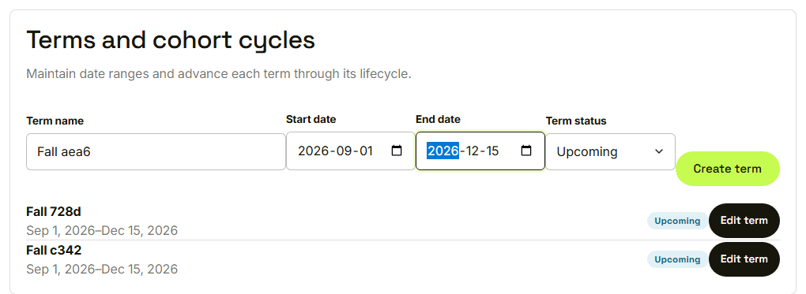
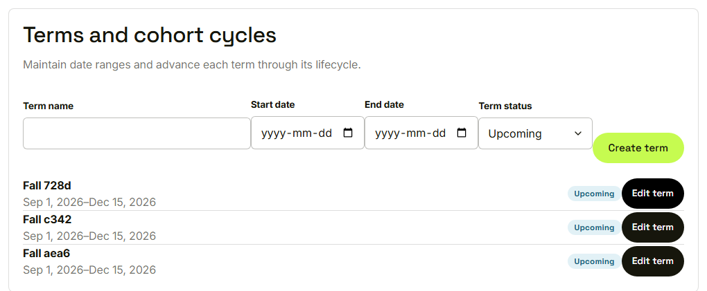
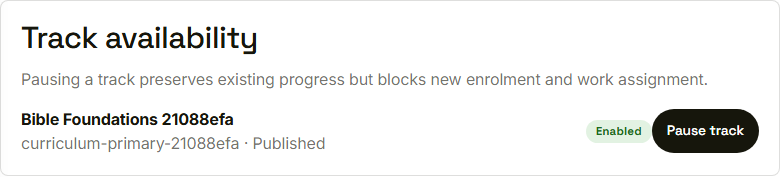
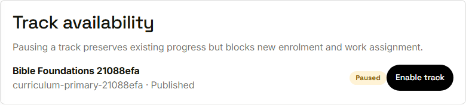

Waypoint · Video 028
Terms and tracks
Dates for terms, pause for tracks
Terms and cohort cycles

Name, dates and status
The term in the list

Dates, status badge, Edit term
Pause a track

Enabled, with Pause track
Paused, nothing lost

Paused, with Enable track
Things to remember
A term has dates and a status
A track can be paused and enabled again
Pausing keeps all existing progress
Only a program administrator can change it